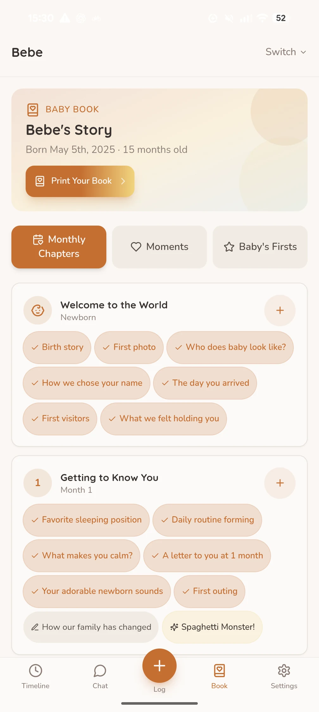

BABYBABY GUIDES / BABY BOOK & MEMORIES
Remento's $99 baby book—and a more affordable way to make yours.
We're glad more people see the value in keeping a baby's story. You can begin yours without paying $99 up front.
A baby book sounds simple until the blank pages start to feel like another task. A photo is easy to take; remembering the joke, the sound, or the person just outside the frame is harder. That is the idea behind Remento's Baby Book of Firsts, and behind the book we're building in BabyBaby: make it easier to keep the story while it is still close.
Remento currently asks $99 for its Baby Book of Firsts. If that package is right for you, it may be money well spent. It is also far from the only way to turn your baby's moments into a real book. Here is what each route includes, and how to start capturing something meaningful today.
What does Remento's $99 include?
Remento's published offer includes a year to record memories, guided prompts, speech-to-story writing, and one full-color hardcover book. In the United States, shipping for that included book is covered. A distinctive feature is the QR code beside a printed story: someone can scan it later to hear the original recording.
That is a bundled storytelling service, not merely a printing charge. It suits a family that wants to speak rather than type, likes guided prompts, and especially values hearing the storyteller's voice from the finished book. We would not pretend a lower-priced book includes every one of those features.
BabyBaby starts with the everyday.
In BabyBaby's free plan, you can keep memories and milestones, add photos and words, and create a digital baby book. Prompts are there when you want an idea; the small moments that never appear on a milestone list belong too. When you want a physical copy, printing is purchased separately. You can choose the size, cover, paper, and finish in the app before ordering.
BabyBaby also brings the book alongside daily care logs, so a first laugh, a sleepy routine, and the week around them can live in one place. Voice recording and AI story tools are available with limits on the free plan; Premium expands those tools. BabyBaby's printed book does not offer Remento's QR codes that play your original voice recordings. The app is currently available on Android.

What can “a fraction of the price” actually mean?
Here is one transparent U.S. example from BabyBaby's current in-app estimate: a 40-page, 8.5-inch square, standard-quality hardcover with photo matte paper is $25.97 for the book. Standard U.S. shipping adds $3.99, making the estimated total $29.96 before tax. That is about 70% less than Remento's $99 upfront package. The books are different sizes and packages: Remento includes a year of service, one 8-by-10-inch hardcover book, and voice-linked QR codes.
| What you pay for | Remento Baby Book of Firsts | BabyBaby |
|---|---|---|
| To start saving memories | $99 bundle | Free plan available |
| Printed book | One hardcover included in the bundle | Purchased separately; price varies with choices and pages |
| Voice in the finished book | QR codes play original recordings | No audio QR codes in the printed book |
| Daily care tracking | Not part of the baby-book offer | Feeding, sleep, diapers, and other care logs in the same app |
The BabyBaby figure is an example, not a fixed book price. Page count, size, binding, quality, paper, shipping choice, currency, and applicable tax can change the final checkout amount. Remento's offer and both products' prices may change; check each checkout before buying. BabyBaby is independent of Remento.
Start the book with one memory, not a project plan.
Choose one photo from this week. Add a date, then answer any one of these: What happened just before the photo? What sound did your baby make? Who was there? What small detail would you forget if you waited a year? What did this moment feel like to you? Two honest sentences are enough.
Make room for ordinary scenes as well as firsts. The Harvard Center on the Developing Child describes the value of responsive, back-and-forth everyday interactions between a baby and caregiver. A favorite bath-time exchange or the face your baby makes when you sing may tell more of your family's story than a list of dates. The interaction matters in its own right; recording it is optional.
A milestone page can still be lovely. Let it prompt a memory, not a race: the CDC says its milestone checklists are tools for conversation, not standards for judging an individual child's development. If you have a developmental concern, bring it to your child's clinician; your baby book does not have to settle it.
Choose the kind of keepsake you'll enjoy making.
If the voice-linked hardcover and done-for-you storytelling are the point, Remento has a clear offer. If you want to build your baby's book a little at a time alongside everyday care, start free, and decide later whether to print a lower-cost physical book, BabyBaby is there on Android.
Either way, the best page is the one you actually make. It can begin with a photo, a remembered sound, and a sentence you would like your child to read one day.
Sources and further reading.
- Remento: The Baby Book of Firsts (offer and price checked October 2, 2026).
- Remento: Baby Book of Firsts FAQ (package and book details checked October 2, 2026).
- Harvard Center on the Developing Child: Serve and Return.
- CDC: Key Points About Developmental Milestone Checklists (February 2026).
KEEP EXPLORING
A book that begins today.
Keep a little detail now. The pages can grow with your family.
See BabyBaby's baby book